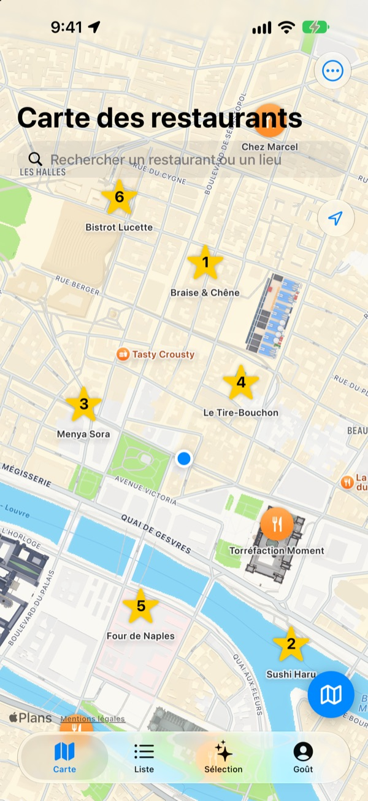
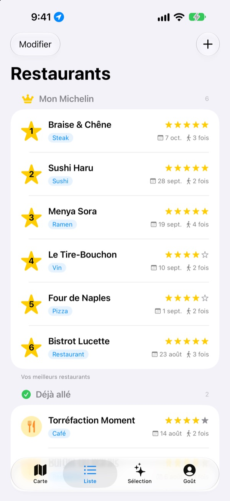
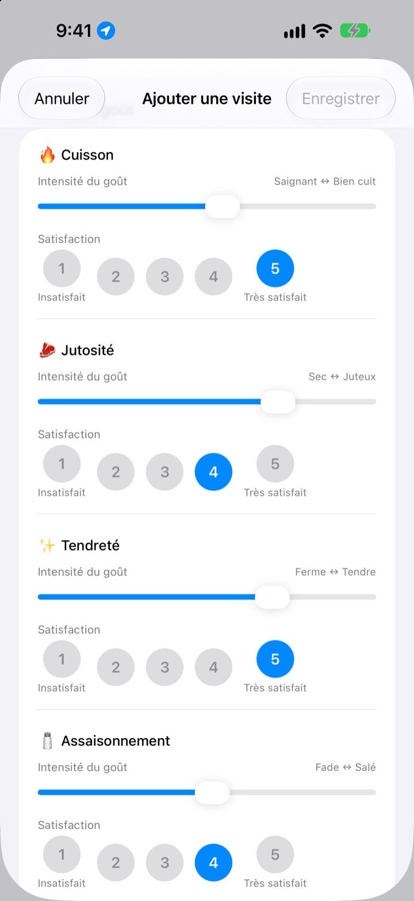
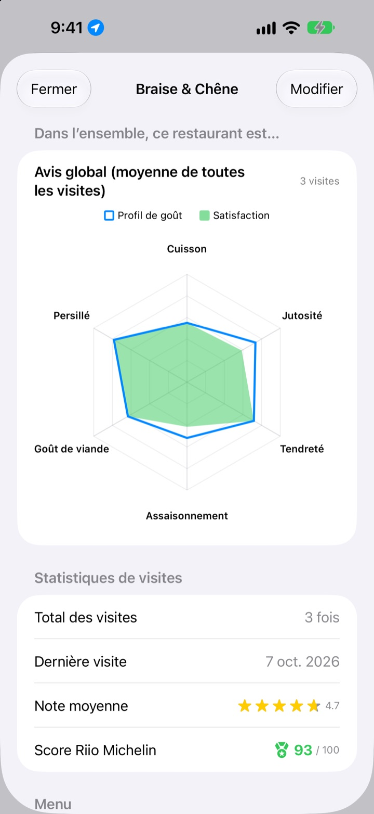

Vos bonnes adresses,
vous ne les oublierez plus
Épinglez les restaurants où vous êtes allé et ceux à tester, et notez à chaque visite ce que vous avez commandé, vos photos et le goût. Quand vous hésitez, vos propres notes ont la réponse.
Toutes les fonctions sont gratuites. Sans inscription, tout reste sur votre iPhone.

Notez un plat
Choisissez un type de cuisine, puis réglez l’intensité de chaque saveur et à quel point elle vous a plu. Mêmes critères et même calcul que pour une visite dans l’app.
C’était délicieux, mais qu’est-ce que j’avais pris ?
Vous savez que ce restaurant vous avait plu, mais le nom vous échappe, et ce que vous aviez commandé ou si le bouillon était trop salé, encore moins. Alors vous cherchez de nouveau et lisez les avis d’inconnus. Insaeng garde sur une carte ce que vous avez goûté vous-même, pour choisir la prochaine adresse d’après votre propre expérience.
Déjà allé, À tester et votre propre Michelin
Cherchez sur la carte ou touchez un lieu proche pour l’enregistrer aussitôt. Séparez les adresses déjà faites de celles à tester, et classez vos six préférées de 1 à 6.
Quand on vous demande une bonne adresse, montrez simplement la liste.

Des questions adaptées à chaque plat
L’intensité de chaque saveur, comme le piquant ou le sel, se règle avec un curseur, et ce que vous en avez pensé se note à part de 1 à 5. Pour un steak, on parle cuisson et jutosité ; pour les sushis, riz et poisson ; pour les ramen, bouillon et nouilles.
Chaque visite garde aussi le plat, les photos, les étoiles et vos notes.

Les adresses où retourner, en chiffres
Au fil des visites, chaque restaurant affiche un avis global moyen de toutes vos venues et un score Riio Michelin sur 100 qui combine étoiles et satisfaction.
Quand vous quittez un restaurant enregistré, un rappel arrive peu après pour noter la visite.

Trois étapes pour commencer
- 1
Enregistrez un restaurant
Cherchez-le sur la carte ou touchez un lieu proche.
- 2
Notez votre visite
Plat, photos, étoiles et saveurs. La note des saveurs est facultative.
- 3
Choisissez la suivante
Consultez votre top 6 et les scores, puis partez avec Plans, Kakao Map ou Naver Map.
Ce que l’on note selon le plat
- 🍽️ Général
- Piquant, Intensité, Douceur, Salé, Onctuosité, Goût naturel
- 🥩 Steak
- Cuisson, Jutosité, Tendreté, Assaisonnement, Goût de viande, Persillé
- 🍣 Sushi
- Shari (riz), Neta (garniture), Wasabi, Équilibre, Façonnage, Température
- 🍜 Ramen
- Bouillon, Nouilles, Chashu, Garniture, Température, Équilibre
- 🍕 Pizza
- Pâte, Sauce, Fromage, Cuisson, Garniture, Équilibre
- 🍷 Vin
- Corps, Tanins, Acidité, Arômes, Finale, Équilibre
- ☕ Café
- Acidité, Corps, Arômes, Arrière-goût, Douceur, Équilibre
Les autres plats se notent avec les critères généraux de la première ligne. Vous pouvez aussi créer vos propres catégories.
Questions fréquentes
Comment ajouter un restaurant ?
Saisissez le nom du restaurant dans le champ de recherche en haut de la carte, puis touchez « Ajouter à mes restaurants » dans les résultats. Vous pouvez aussi toucher un lieu à proximité affiché sur la carte pour l’ajouter directement. Si un lieu n’apparaît pas dans la recherche, ajoutez-le vous-même à votre position actuelle ou à l’endroit choisi sur la carte.
Que signifient « Déjà allé », « À tester » et le Top 6 ?
Déjà allé – Les restaurants où vous êtes déjà allé. Vous pouvez y noter vos visites. À tester – Les restaurants que vous voulez découvrir un jour. Une fois sur place, passez-le dans « Déjà allé » depuis sa fiche détaillée. Top 6 (Mon Michelin) – Vos six restaurants préférés, classés de la 1 re à la 6 e place. Un restaurant « À tester » ne peut pas entrer dans le Top 6.
Dois-je forcément évaluer le goût ?
Non, c’est facultatif. Si vous notez, l’intensité des saveurs et la satisfaction s’ajoutent à l’avis global du restaurant et comptent dans son score Riio Michelin.
Quand arrive la notification « Comment s’est passée votre visite ? » ?
Si vous restez plus de 5 minutes près d’un restaurant enregistré puis repartez, la notification arrive environ 40 minutes plus tard. Il faut pour cela autoriser la position « Toujours » et les notifications. Si vous ne voulez pas de ces notifications, désactivez-les dans Réglages > Apps > Insaeng, ou passez l’accès à la position sur « Lorsque l’app est active ». La vérification de la position se fait uniquement sur l’appareil ; vos déplacements ne sont ni enregistrés ni transmis à l’extérieur.
Puis-je utiliser l’app sans autoriser la position ?
Oui. Vous pouvez choisir vous-même un emplacement sur la carte pour ajouter des restaurants et noter vos visites. Seuls l’affichage de votre position et le rappel après la visite ne sont alors pas disponibles.
La recherche de lieux ne donne aucun résultat
La recherche de lieux nécessite une connexion à Internet. Essayez un autre nom ou un mot-clé plus court. Si le lieu reste introuvable, choisissez un emplacement sur la carte et ajoutez-le vous-même.
Où sont enregistrées mes données ? Sont-elles synchronisées avec mes autres appareils ?
Les restaurants, les visites et les photos sont enregistrés uniquement sur cet iPhone. La version actuelle ne permet pas la synchronisation avec d’autres appareils, et la sauvegarde et la restauration iCloud proposées dans les réglages ne fonctionnent pas encore. Les données de l’app sont en revanche incluses dans une sauvegarde complète de l’iPhone (sauvegarde iCloud ou sur ordinateur).
Je veux tout effacer
Dans les réglages accessibles depuis l’écran de la carte, touchez « Supprimer toutes les données » pour effacer les restaurants et les visites. Attention, cette action est irréversible. Pour effacer aussi toutes les photos sans exception, supprimez l’app.
Si je supprime puis réinstalle l’app, est-ce que je retrouve mes données ?
Non. Vos données étant enregistrées uniquement sur l’appareil, elles sont effacées avec l’app. Pensez-y avant de la supprimer.
Tout est vraiment gratuit ?
Oui. Toutes les fonctions sont gratuites, sans publicité ni compte. « Soutenir le développeur » dans les réglages est entièrement facultatif et ne débloque rien.
Pour toute question sans réponse ci-dessus, écrivez-nous directement depuis l’app dans Réglages > Assistance, ou par e-mail à mizzking75@gmail.com. Indiquez la version de l’app, le modèle de votre iPhone et ce que vous faisiez sur quel écran : nous pourrons vous aider plus vite.